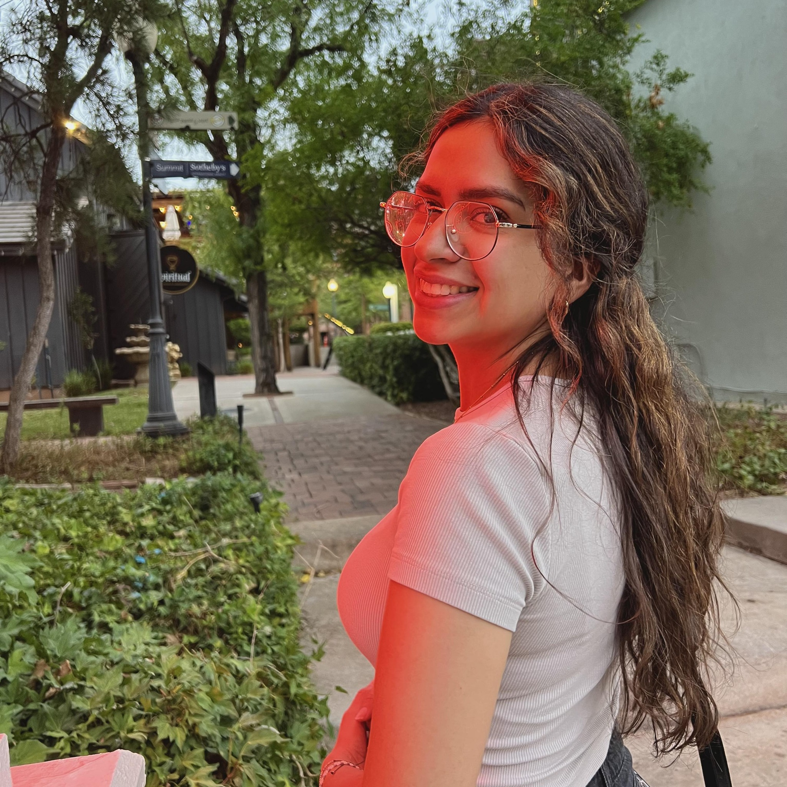

Nayeli Puga WDD130
Hello everyone! My name is Nayeli Puga im from Mexico, Baja California in a city Mexicali i grow up there it's a small city with industry and a hot weather. I curretly live in United State Utah i love their Mountain and their beautiful nature I enjoy doing hiking, visiting lakes, and i love Utah sunset i think they are so special. I work in a restaurant full time, and i enjoy reading my favorite book it is Where the Crawndads sing it's a emotive nobel, i like hang out with friends and family.
